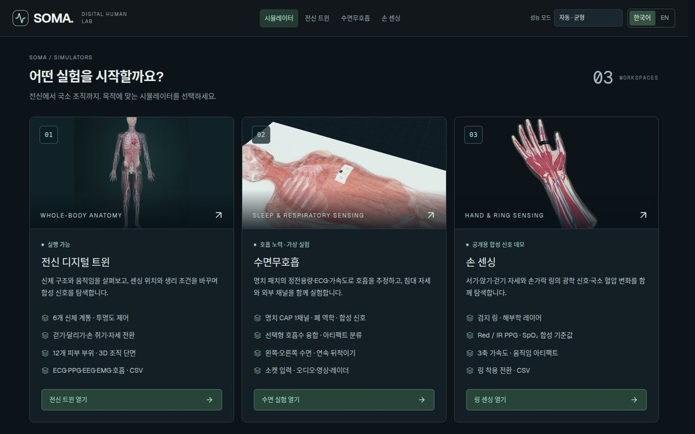
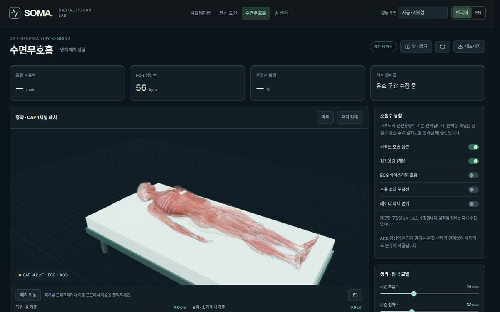
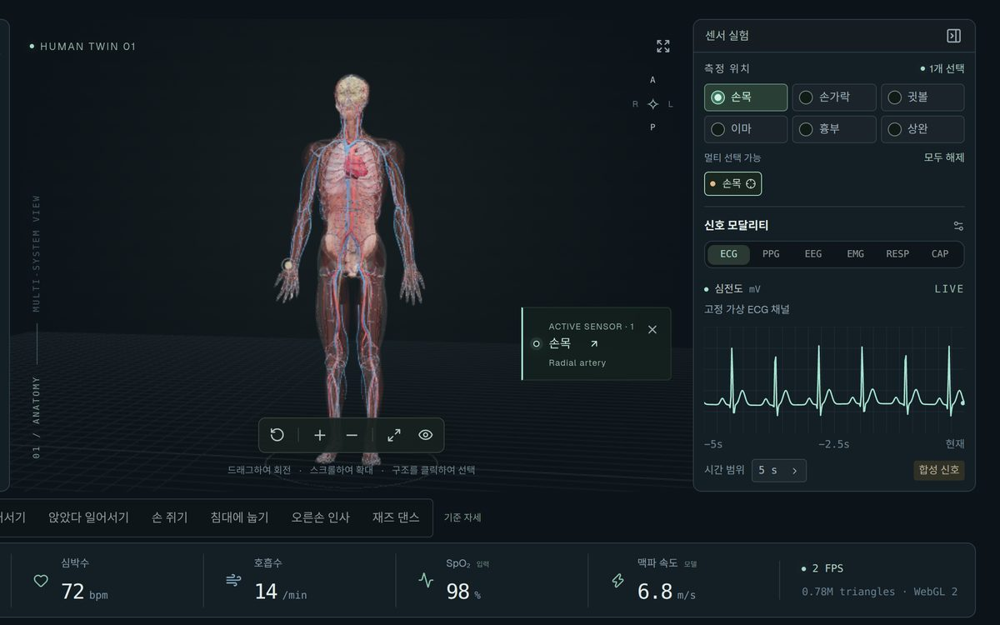
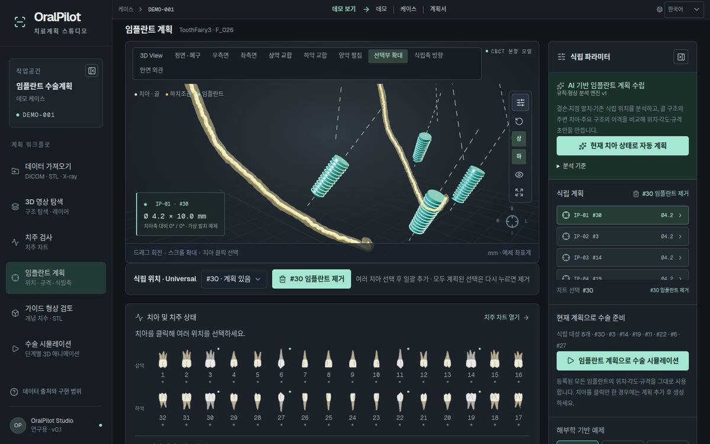
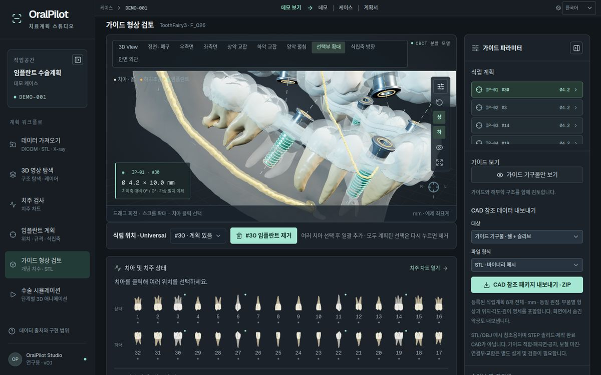

기존 시스템
기존 인프라와 업무 도구를 교체하지 않고 그 위에 연결되는 구조로 설계해, 전환 비용과 도입 리스크를 최소화합니다.
AI Systems Development Partner
무엇부터 해야 할지, 어떤 데이터가 필요한지, 도입 후 누가 관리할지. a3gent가 과제 정의부터 설계·연동·검증까지 맡고, 내부 인력만으로 운영할 수 있는 상태로 이관합니다.
접근 방식
AI 프로젝트가 PoC에서 멈추는 이유는 대부분 모델 바깥에 있습니다. 다음 네 가지를 착수 단계부터 설계 범위에 포함합니다.
기존 인프라와 업무 도구를 교체하지 않고 그 위에 연결되는 구조로 설계해, 전환 비용과 도입 리스크를 최소화합니다.
의료 영상, 생체 신호, 음성처럼 형식과 품질이 제각각인 데이터를 검증 가능한 입력 파이프라인으로 정비합니다.
결과 화면에서 끝나지 않고, 현업 담당자가 그 결과로 다음 의사결정을 내리는 업무 흐름까지 설계합니다.
보안, 검증 범위, 장애 시 동작, 유지보수 주체 등 운영 단계의 조건을 착수 전에 합의합니다.
01 · 구축된 솔루션
모든 솔루션은 공개 데모로 직접 검토하실 수 있습니다. 도입 시 고객사 환경에 맞춰 적용 범위와 검증 기준을 합의합니다.





웨어러블 센서 개발을 위한 바이오센싱 디지털 트윈. 전신 해부학 모델 위에 가상 센서를 배치하고 생리 조건을 바꿔 가며 합성 생체신호를 검토해, 하드웨어 제작 전에 설계 판단을 내릴 수 있습니다.





3D 해부학, 치주 차트, 임플란트 배치, 수술 시뮬레이션을 단일 워크플로로 통합한 임플란트 치료계획 스튜디오. 진료 데이터는 브라우저 내에서만 처리됩니다.
02 · 적용 사례
경험을 나열하는 대신, 사례마다 해결한 과제와 실제 가동 범위, 아직 검증하지 않은 범위를 명시합니다. 도입 판단에 필요한 정보를 그대로 제공합니다.
SOMA · 바이오센싱 디지털 트윈
웨어러블 센서 신호는 부착 위치·자세·움직임·조직 특성에 따라 크게 달라집니다. 이를 확인하려면 하드웨어 제작과 피험자 실험을 반복해야 하므로, 초기 설계 단계의 의사결정이 느리고 비용이 큽니다.
해부학 모델, 센서 배치, 생리 조건, 신호 합성을 하나의 실험 환경으로 통합했습니다. 연구·개발 조직은 조건을 바꿔 가며 신호 변화를 사전에 검토하고, 실제 실험 범위를 좁혀 개발 기간과 비용을 줄일 수 있습니다.
합성 신호 기반의 연구용 환경입니다. PPG 신호로부터의 혈압 추정과 독립 검증은 아직 구현하지 않았으며, 임상 판정 용도가 아닙니다.
OralPilot · 임플란트 치료계획 스튜디오
CBCT, 구강 스캔, X-ray, 치주 기록이 서로 다른 도구와 형식에 분산되어 있어, 치료계획 수립 시 임상의가 여러 도구를 오가며 정보를 수작업으로 종합해야 합니다.
데이터 입력부터 3D 탐색, 치주 검사, 임플란트 계획, 가이드 검토, 수술 시뮬레이션까지 6단계를 단일 화면 워크플로로 통합했습니다. 진료 파일은 서버에 전송하지 않고 브라우저 내에서만 처리해 데이터 보안 요건을 충족합니다.
학습 모델이 아닌 규칙 기반 형상 탐색이며, 공개 케이스로 검증한 연구용 도구입니다. 자동 분할과 CT–구강스캔 정합은 아직 구현하지 않았고, 골질 추정과 임상 안전성 판정은 하지 않습니다.
핵심 역량
a3gent를 이끄는 엔지니어가 24년간 삼성전자와 글로벌 IT·의료·AI 기업에서 직접 설계해 제품에 넣어 온 기술입니다. 위 두 사례는 이 경험 위에서 만들어졌습니다.
의료 영상, 생체 신호, 진료 기록을 다루는 제품을 데이터 파이프라인부터 임상 현장의 화면까지 개발합니다.
DSP와 센서 데이터를 제품에 들어가는 알고리즘으로 만들고, 제약된 하드웨어에서 동작하도록 최적화합니다.
음성 인식, 자연어 처리, 실시간 영상 처리를 실제 사용 환경의 잡음·지연·대화 흐름 조건에서 동작하는 서비스로 구현합니다.
클라우드 플랫폼과, AI 개발 과정의 반복 작업을 자동화하는 도구를 만듭니다.
03 · 도입 방식
필요한 범위만 선택하실 수 있습니다. 솔루션 도입만으로 충분한 경우가 많고, 기존 시스템과 깊이 연동해야 할 때 맞춤 개발을 결합합니다.
계약 범위구축된 솔루션의 사용권과 도입 서비스
공개된 솔루션이 해결하는 과제와 고객사의 과제가 대부분 일치할 때 적합합니다.
계약 범위고객사 시스템에 맞춘 연동·확장·검증을 위한 전문 인력의 직접 참여
솔루션을 기반으로 고객사 고유의 시스템과 프로세스에 깊이 맞춰야 할 때 적합합니다.
도입 상담
해결 과제와 현재 운영 중인 시스템을 알려 주세요.
기존 솔루션으로 해결되는 영역과 신규 개발이 필요한 영역을 구분합니다.
솔루션 도입, 맞춤 개발, 또는 두 모델의 결합을 제안합니다.
적용 범위와 검증 기준을 합의한 뒤 착수합니다.
상담 문의
해결 과제와 현재 시스템을 간단히 남겨 주시면, 검토 후 회신드립니다.